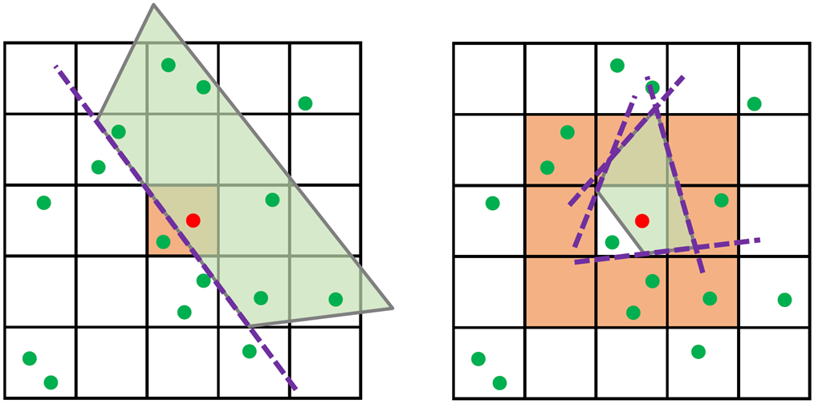

经历
-
2021.01-至今, 讲师, 南昌大学
-
2018.10-2019.09, 国家留学基金委联培博士项目, Carnegie Mellon University
导师: Yongjie Jessica ZHANG 教授 -
2015.07-2016.06, 开发工程师, 高德信息技术有限公司
-
2012.09-2015.06, 硕士, 厦门大学
导师: 陈中贵教授 -
2008.09-2012.06, 学士, 湖南大学
基金
-
2023.07-2026.06 江西省自然科学基金(青年项目) 10万 主持
-
2023.07-2026.06 南昌大学青年人才培育创新基金 20万 主持
-
2022.01-2024.12 国家自然科学基金(青年项目) 30万 主持
获奖
-
2018.06 最佳论文一等奖 Solid and Physical Modeling 2018
主要论著 (所有论著)
|  |
7 三维精确power图的GPU并行计算 肖艳阳*, 李渭, 徐少平 计算机辅助设计与图形学学报, 2023, 35(12): 1958-1965 [DOI] [PDF] |
 |
6 Meshless Power Diagrams Yanyang Xiao, Juan Cao, Shaoping Xu, Zhonggui Chen* Computers & Graphics (Proc. SMI), 2023, 114: 247-256 [DOI] [PDF] [code] |
 |
5 Image Representation on Curved Optimal Triangulation Yanyang Xiao, Juan Cao, Zhonggui Chen* Computer Graphics Forum, 2022, 41(6): 23-36 [DOI] [PDF] [code] |
 |
4 Merge-Swap Optimization Framework for Supervoxel Generation from Three-Dimensional Point Clouds Yanyang Xiao, Zhonggui Chen*, Zhengtao Lin, Juan Cao, Yongjie Jessica Zhang, Yangbin Lin, Cheng Wang Remote Sensing, 2020, 12(3): 473 [DOI] [PDF] |
 |
3 Optimal Power Diagrams via Function Approximation Yanyang Xiao, Zhonggui Chen, Juan Cao*, Yongjie Jessica Zhang, Cheng Wang Computer-Aided Design (Proc. SPM; Best Paper Award 1st Place), 2018, 102: 52-60 [DOI] [PDF] |
 |
2 结合广义重心坐标与Voronoi剖分的函数分片逼近 肖艳阳, 涂锦灿, 陈中贵* 图学学报, 2015, 36(3): 367-375 [link] [PDF] |
 |
1 Approximation by Piecewise Polynomials on Voronoi Tessellation Zhonggui Chen, Yanyang Xiao, Juan Cao* Graphical Models (Proc. GMP), 2014, 76(5): 522-531 [DOI] [PDF] [code] |